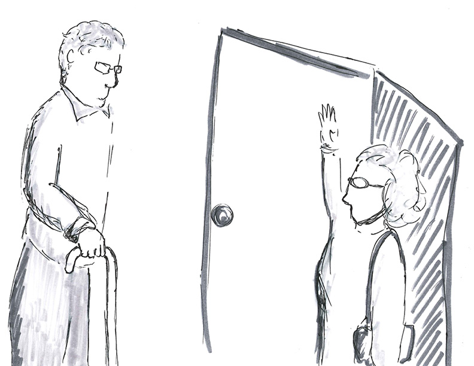
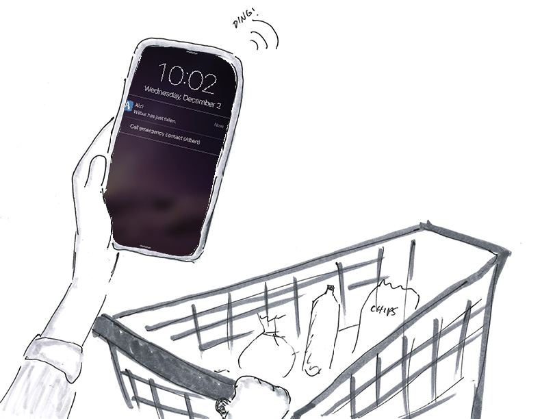
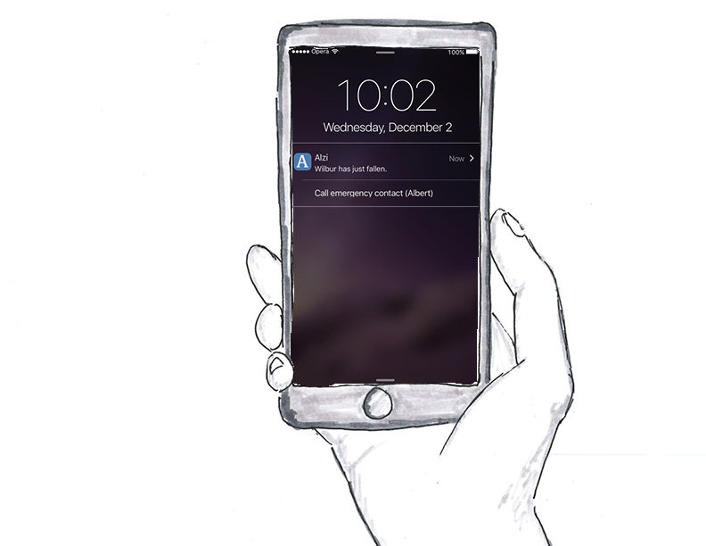
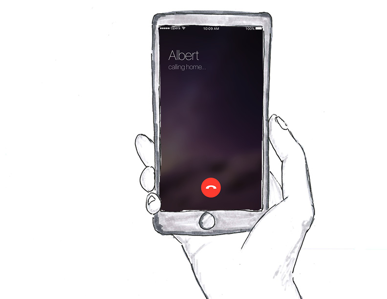
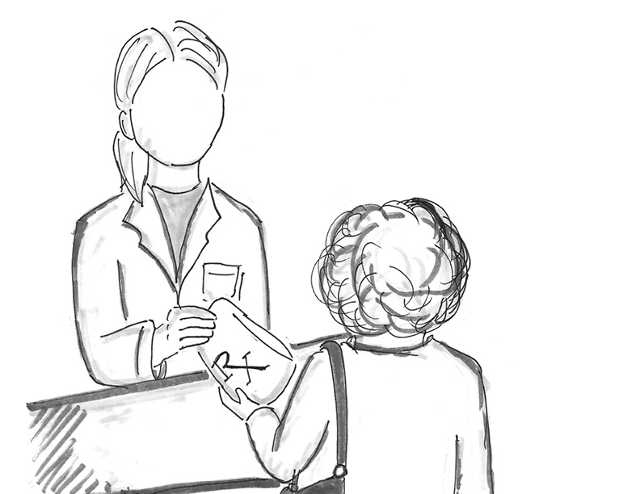
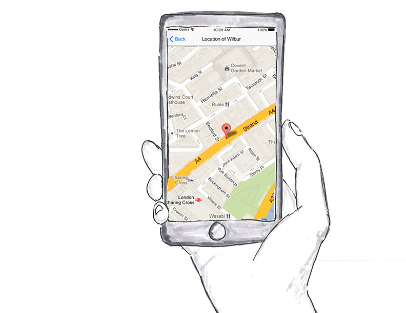
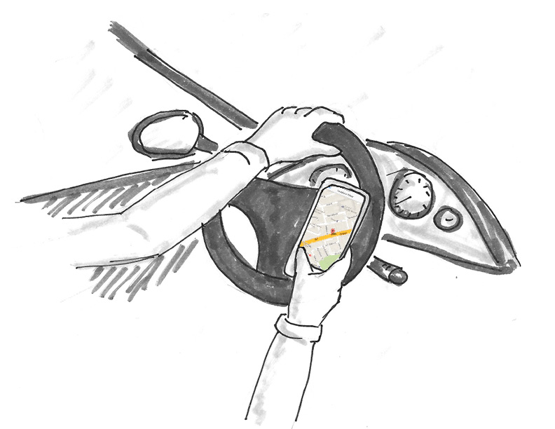

Overview: Alzheimer patient often walk out of homes or drive (even though they can't drive) or leave stove on or use some harmful material. This becomes safety hazard for the patient and thier family. This creates a dilemma for caregivers where they can either either keep the patient with them and risk their life (and of the people around them) or keep them safe in a nursing home away from them. We create a design intervention that will provide caregivers peace of mind by assisting him/her in keeping the patient secure. In coming up with solution for this we tried experiemnting with design process by using different techniques such as Google Design Sprint and followed 3 cycles of iteration in short period of 2 weeks.
{kind=link}
My Role: User Study, Problem Definition, Ideation, Google Design Sprint and Use Cases
Research
Subject matter expert and user interviews helped us in identifying the daily life and problems of the caregivers of alzheimers patient. This gave us an important insight that caregiving is a 24*7 job. That is caregiver has to be on a continous lookout for the patient. Otherwise patient might harm himself/ herself or those around them. Example- (from a caregiver) a patients mother used bleach for a bath thinking it was a soap. At other times they might just wander off and it becomes dificult and strefull job to find them.
Problem
The main problem that we identified with the existing rating system in Uber is that its ambiguous and inaccurate. The system's ambiguity comes from lack of shared mental model of working of rating system among the passengers. One rider gives 3 stars on average, other 4 and whereas other gives 5, for the same experience. This further leads to inaccurracy. Moreover, drivers don’t get reasons behind the bad ratings. Providing them reason behind bad rating gives them a fair chance to improve themselves which will prevent uber from deactivating good drivers.
Design Principles
Interaction with users helped us devloping some principles that we need to be present in our designs-
- Ubiquity: The device needs to be hidden from the patient as often it is difficult for the Alzehimer's patient to relate with technological devices.
- Quick Action: While testing, we found out that as soon as the caregivers saw the notification they wanted to perform some action like immediately head for home or call neighbours.
- Adaptable: Every Alzheimer's patient is different from other. Thus the system should be able to adapt itself for need of different patients.
Concept
We sketched and ideated with goal of a design that empowered users to provide quick qualitative feedback by bringing qualitative options upfront.We sketched and ideated with goal of a design that empowered users to provide quick qualitative feedback by bringing qualitative options upfront.We sketched and ideated with goal of a design that empowered users to provide quick qualitative feedback by bringing qualitative options upfront.We sketched and ideated with goal of a design that empowered users to provide quick qualitative feedback by bringing qualitative options upfront.We sketched and ideated with goal of a design that empowered users to provide quick qualitative feedback by bringing qualitative options upfront.

Use Case
Use Case 1: Wilbur is the Alzehimer's patient who has difficulty getting up after a fall. One day his caregiver goes out for shopping while he takes a fall. This use case shows how can our system be useful in that case.

Caregiver goes to shop

Willbur takes a fall

Caregiver recieves notification

Caregiver calls neighbour
{kind=link}
{kind=link}
{kind=link}
{kind=link}
Use Case 2: Wilbur used to go for walk before he became a patient. Sometimes he just goes for walking alone and then gets lost. Caregiver has set an app to trigger alert if Wilbur leaves the building. One day, caregiver goes out to buy medicines for Wilbur when he wanders off from the home.

Caregiver goes out to buy medicines
She is alerted that he has left home
 She tracks his location
 She drives to pick him up
{kind=link}
{kind=link}
{kind=link}
{kind=link}
Use Case 3: Some things like turning stove on, bleach etc can become dangerous object in hands of the Alzheimers patient. Caregiver is working in other room when she recieves a notification saying that Wilbur has turned on the stove.
Caregiver is reading in other room
She drives to pick him up
 She drives to pick him up
She drives to pick him up
{kind=link}
{kind=link}
Conclusion